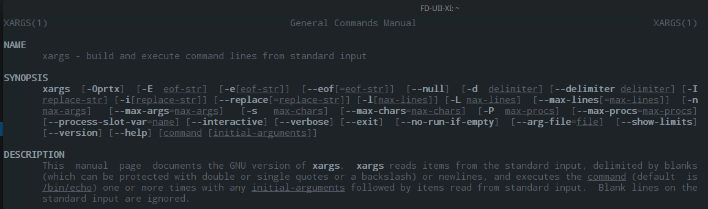

Belajar perintah xargs di Linux
Perintah xargs
perintah $ man xargs akan menapilkan manual page dari perintah xargs, berikut hasil gambarnya :
1
2
3
4
5
6
7
8
9
10
11
12
13
14
$ xargs --help
FD-UII-XI:$ xargs --help
Usage: xargs [OPTION]... COMMAND [INITIAL-ARGS]...
Run COMMAND with arguments INITIAL-ARGS and more arguments read from input.
Mandatory and optional arguments to long options are also
mandatory or optional for the corresponding short option.
-0, --null items are separated by a null, not whitespace;
disables quote and backslash processing and
logical EOF processing
-a, --arg-file=FILE read arguments from FILE, not standard input
-d, --delimiter=CHARACTER items in input stream are separated by CHARACTER,
not by whitespace; disables quote and backslash
processing and logical EOF processing

xargs adalah tool bawaan (biasanya) di sistem operasi linux yang berfungsi untuk mengeksekusi perintah berdasarkan standar input.
1
2
3
4
5
6
7
8
FD-UII-XI:$ find . -type f |awk '{print "`"$0"`"}'|sed 's/`/"/g'|xargs du -h
4.0K ./lat-2016/take-camera-picture.py
8.0K ./lat-2017/Ffu2IMG/ffu2img.py
8.0K ./lat-2017/Ffu2IMG/ffu2img.py3
4.0K ./lat-2017/Ffu2IMG/LICENSE
8.0K ./lat-2017/Ffu2IMG/random-master.zip
512 ./lat-2017/Ffu2IMG/README.md
4.0K ./lat-2017/Ffu2IMG/unlockerv.py
Perintah diatas merupakan kombinasi dari perintah find . -type f yang berfungsi untuk me-list semua file di direktori aktif dan hanya yang bertype file tanpa direktori,
perintah awk ‘{print “"$0"”}’ berfungsi untuk meletakkan tanda petik (grave) di awal dan diakhir dari hasil pencarian pada perintah pertama,
sedangkan perintah sed ‘s/`/”/g’ adalah untuk mengubah kembali tanda petik (grave) menjadi tanda petik ganda, kenapa harus ditaruh tanda petik ganda pada awal dan akhir ?, agar tidak error saat perintah xargs du -h dijalankan, kenapa error ? karena pada NAMA file yang di periksa terdapat SPASI, dan jika ada spasi penulisannya harus ditambah backslash pada spasi tersebut atau memberikan tanda petik ganda diawal dan akhir dari PATH + NAMA File yang akan diperiksa.
1
2
3
4
5
FD-UII-XI:$ find . -type f|grep ".py"|xargs wc -l
33 ./lat-2016/take-camera-picture.py
111 ./lat-2017/Ffu2IMG/ffu2img.py
112 ./lat-2017/Ffu2IMG/ffu2img.py3
76 ./lat-2017/Ffu2IMG/unlockerv.py
perintah grep “.py” adalah mencari kata “.py” disetiap file yang dihasilkan dari perintah find . -type f dan perintah xargs wc -l untuk menghitung jumlah baris dari tiap file yang dihasilkan dari perintah sebelumnya.
by : admin @ Yogyakarta - Mon May 22 01:37:03 WIB 2017